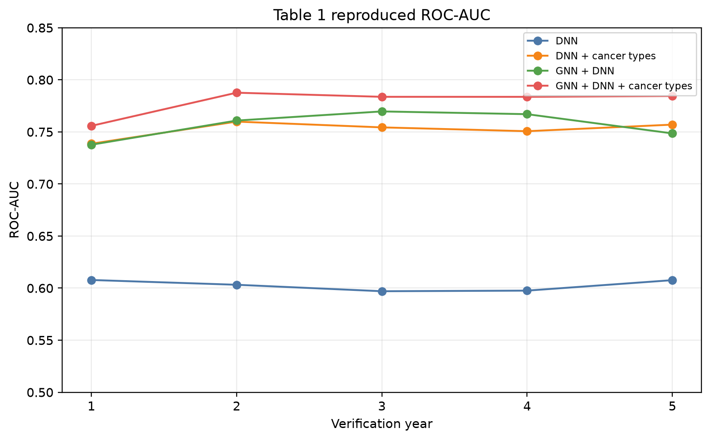
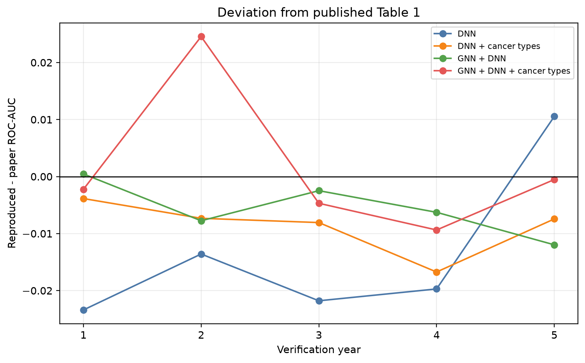
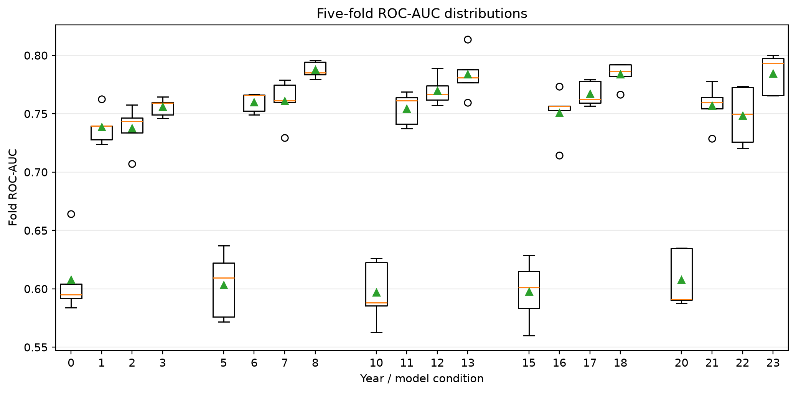
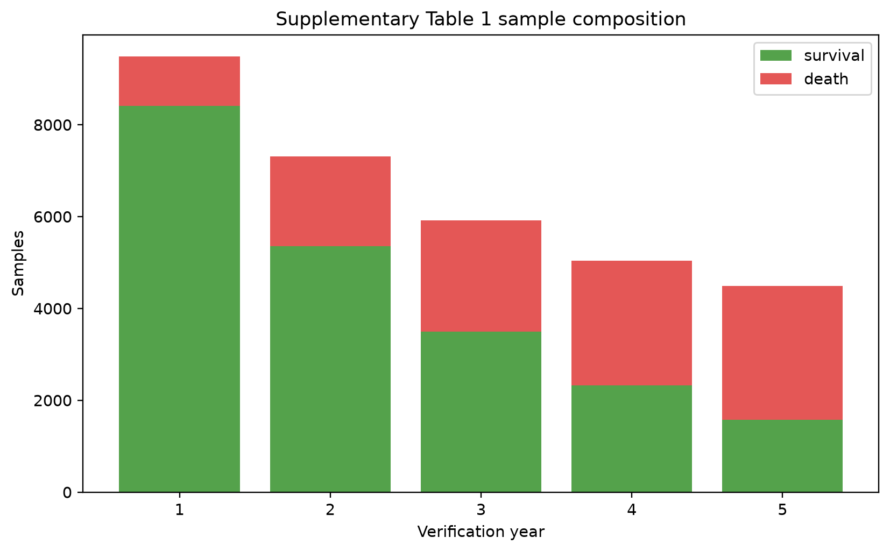
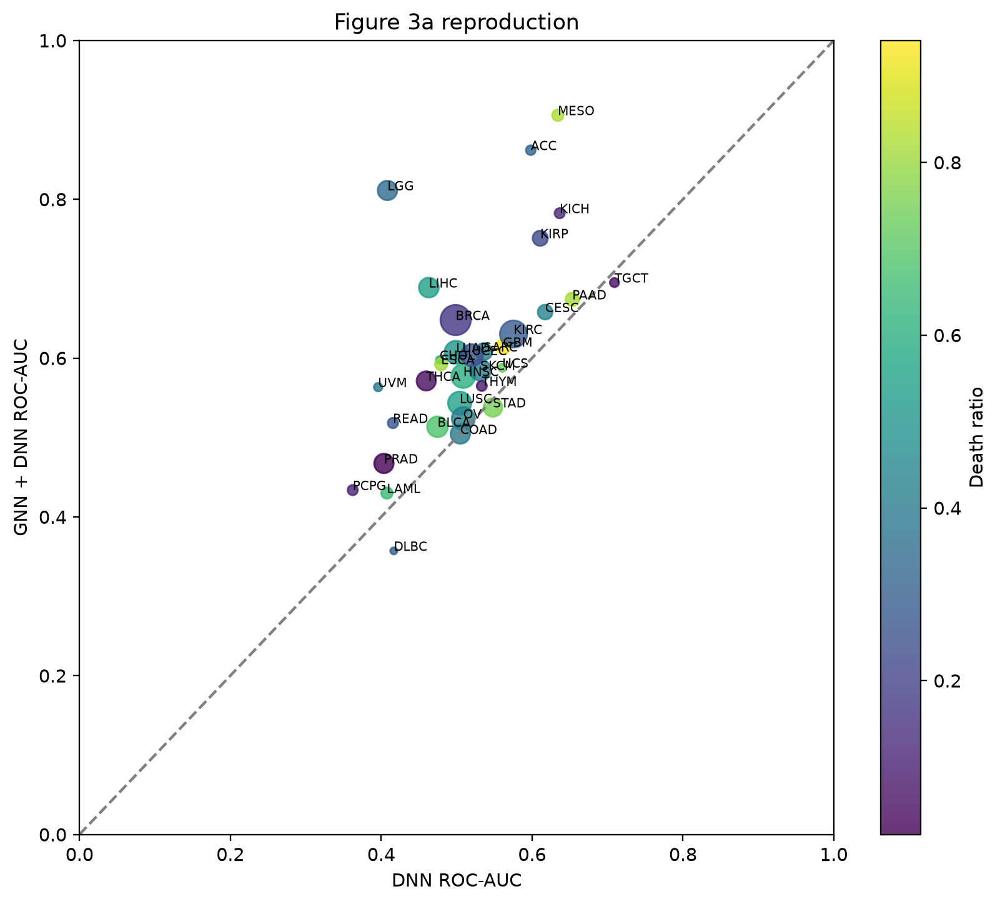
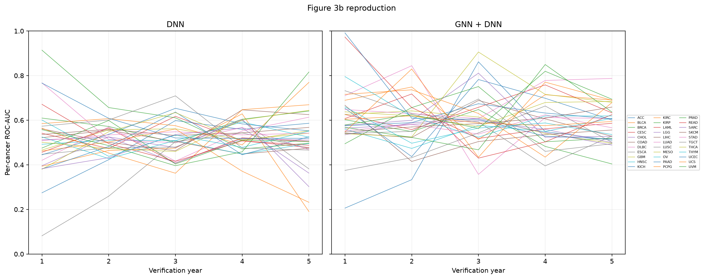
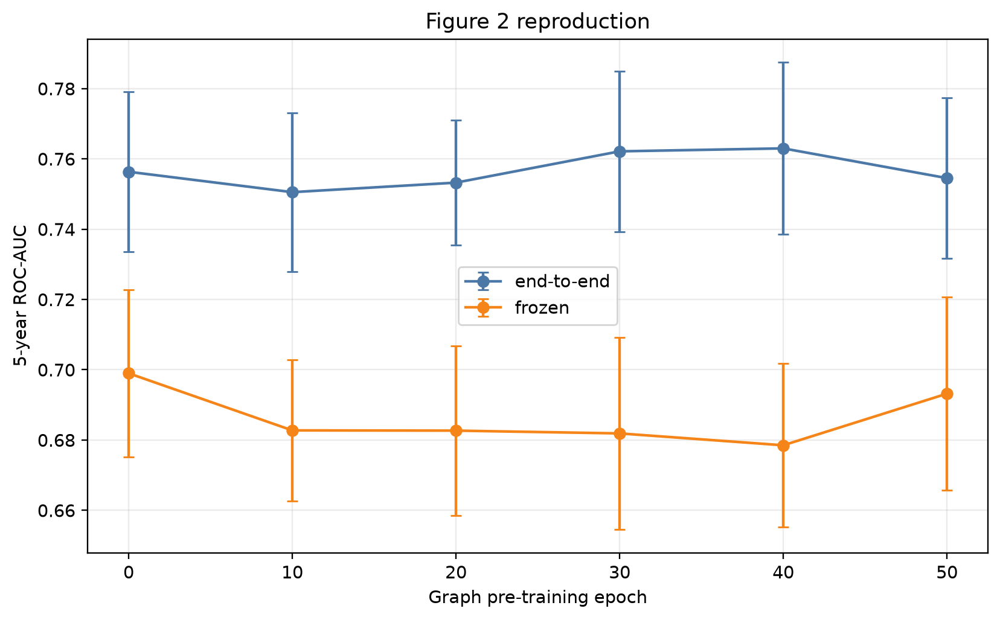
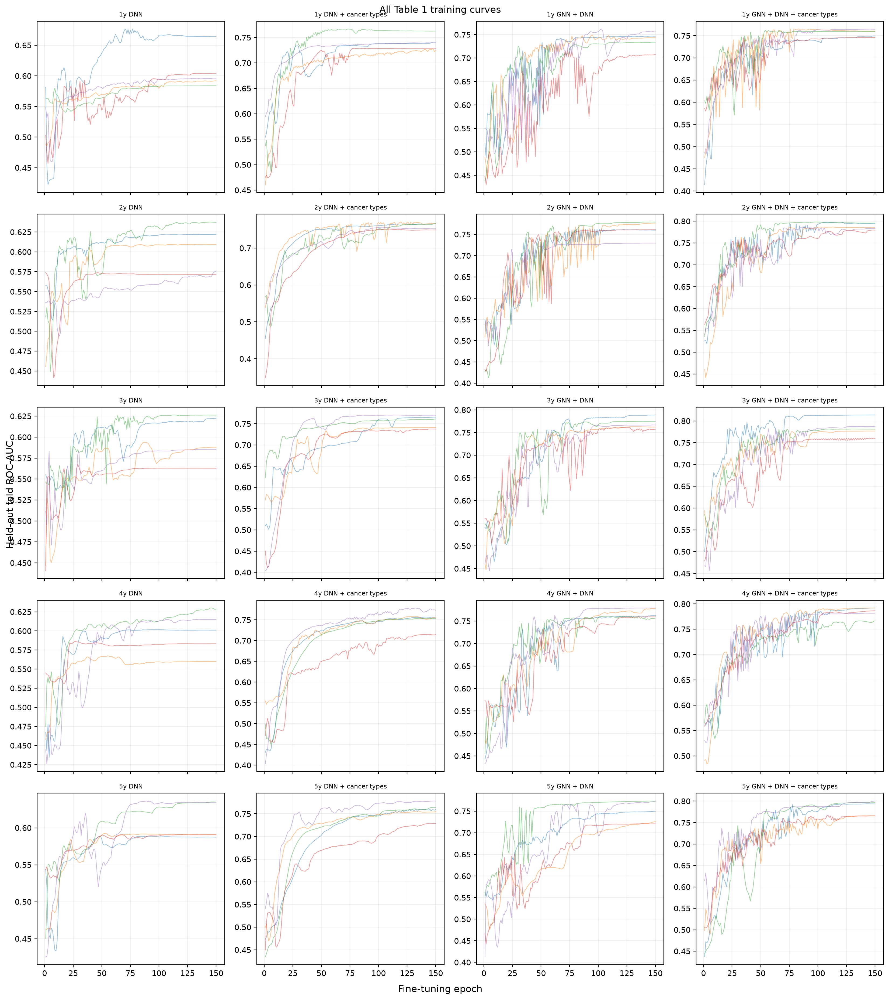
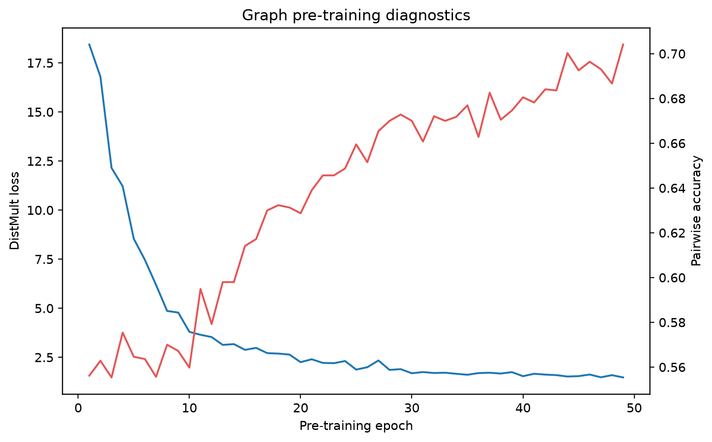
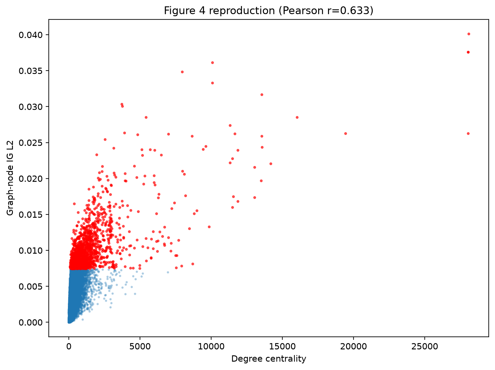

Table 1 grid status: complete. The workflow covers five verification years, four model variants, five stratified folds, 150 fine-tuning epochs, and the manuscript final-epoch evaluation protocol. Completed fold artifacts are reused.
| year | paper_dnn | reproduced_dnn | delta_dnn | paper_dnn_cancer | reproduced_dnn_cancer | delta_dnn_cancer | paper_gnn_dnn | reproduced_gnn_dnn | delta_gnn_dnn | paper_gnn_dnn_cancer | reproduced_gnn_dnn_cancer | delta_gnn_dnn_cancer |
|---|---|---|---|---|---|---|---|---|---|---|---|---|
| 1 | 0.6312 | 0.6078 | -0.0234 | 0.7425 | 0.7386 | -0.0039 | 0.7382 | 0.7387 | 0.0005 | 0.7585 | 0.7563 | -0.0022 |
| 2 | 0.6168 | 0.6032 | -0.0136 | 0.7672 | 0.7599 | -0.0073 | 0.7678 | 0.7600 | -0.0078 | 0.7596 | 0.7842 | 0.0246 |
| 3 | 0.6188 | 0.5970 | -0.0218 | 0.7624 | 0.7543 | -0.0081 | 0.7733 | 0.7708 | -0.0025 | 0.7890 | 0.7843 | -0.0047 |
| 4 | 0.6173 | 0.5976 | -0.0197 | 0.7674 | 0.7507 | -0.0167 | 0.7714 | 0.7651 | -0.0063 | 0.7900 | 0.7806 | -0.0094 |
| 5 | 0.5971 | 0.6076 | 0.0105 | 0.7644 | 0.7570 | -0.0074 | 0.7581 | 0.7461 | -0.0120 | 0.7850 | 0.7845 | -0.0005 |
NA means that a full condition has not completed. Fold values are exported to outputs/cancer/report/table1_fold_auc.tsv.
| year | variant | mean_auc | mean_accuracy | mean_precision | mean_recall | mean_f1 |
|---|---|---|---|---|---|---|
| 1 | dnn | 0.6078 | 0.6300 | 0.9119 | 0.6481 | 0.7397 |
| 1 | dnn_cancer | 0.7386 | 0.7194 | 0.9373 | 0.7326 | 0.8219 |
| 1 | gnn_dnn | 0.7387 | 0.6298 | 0.9481 | 0.6168 | 0.7452 |
| 1 | gnn_dnn_cancer | 0.7563 | 0.6984 | 0.9447 | 0.7015 | 0.8036 |
| 2 | dnn | 0.6032 | 0.5498 | 0.7877 | 0.5297 | 0.6249 |
| 2 | dnn_cancer | 0.7599 | 0.6879 | 0.8609 | 0.6873 | 0.7615 |
| 2 | gnn_dnn | 0.7600 | 0.7005 | 0.8569 | 0.7120 | 0.7752 |
| 2 | gnn_dnn_cancer | 0.7842 | 0.6972 | 0.8828 | 0.6791 | 0.7646 |
| 3 | dnn | 0.5970 | 0.5682 | 0.6485 | 0.5814 | 0.6072 |
| 3 | dnn_cancer | 0.7543 | 0.6813 | 0.7581 | 0.6802 | 0.7140 |
| 3 | gnn_dnn | 0.7708 | 0.6798 | 0.7908 | 0.6364 | 0.6918 |
| 3 | gnn_dnn_cancer | 0.7843 | 0.6982 | 0.7892 | 0.6748 | 0.7190 |
| 4 | dnn | 0.5976 | 0.5633 | 0.5257 | 0.6155 | 0.5600 |
| 4 | dnn_cancer | 0.7507 | 0.6920 | 0.7133 | 0.5682 | 0.6287 |
| 4 | gnn_dnn | 0.7651 | 0.6805 | 0.6704 | 0.6698 | 0.6545 |
| 4 | gnn_dnn_cancer | 0.7806 | 0.7029 | 0.6763 | 0.6953 | 0.6820 |
| 5 | dnn | 0.6076 | 0.5452 | 0.4104 | 0.6707 | 0.5053 |
| 5 | dnn_cancer | 0.7570 | 0.7073 | 0.5778 | 0.6255 | 0.5992 |
| 5 | gnn_dnn | 0.7461 | 0.6034 | 0.4876 | 0.7777 | 0.5822 |
| 5 | gnn_dnn_cancer | 0.7845 | 0.7193 | 0.5896 | 0.6764 | 0.6264 |
Table 1 compares ROC-AUC because that is the metric the manuscript reports. These are the same folds and the same held-out predictions scored at a fixed 0.5 decision threshold, so they describe the operating point rather than the ranking. The labels are imbalanced and shift with the verification year (88.6% survival at 1 year, 34.9% at 5), so accuracy is not comparable across years; also exported to outputs/cancer/report/table1_threshold_metrics.tsv.
| year | total | death | survival |
|---|---|---|---|
| 1 | 9484 | 1076 | 8408 |
| 2 | 7308 | 1951 | 5357 |
| 3 | 5915 | 2425 | 3490 |
| 4 | 5036 | 2713 | 2323 |
| 5 | 4492 | 2922 | 1570 |
The prepared dataset contains 4,448 expression features, 33 cancer types, and a graph with 30,918 stored nodes, 3,673,654 directed edges and 13 relations. Cancer-level counts are in outputs/cancer/report/supplementary_table1_sample_counts.tsv.










conda activate gnn
bash scripts/cancer/reproduce_paper.sh prepare
bash scripts/cancer/reproduce_paper.sh pretrain
python scripts/cancer/reproduce_table1.py --gpus 0,1,2
bash scripts/cancer/reproduce_paper.sh figure2
bash scripts/cancer/reproduce_paper.sh ig
bash scripts/cancer/reproduce_paper.sh reportPreprocessing is a separate step: pathwaygnn-data cancer-prepare writes the generic dataset under data_cancer/prepared, and every pathwaygnn command then selects it through the dataset: block of configs/cancer/dataset.yaml. The Table 1 runner schedules all 20 conditions over GPUs and resumes at fold level. selection: final_epoch follows the manuscript. best_test_auc is only for public-code compatibility and uses the held-out fold for selection.
counts_gene.tsv contains 11,285 expression columns but no Ensembl identifier row or column. A separately supplied ordered Ensembl ID file can be mapped by pathwaygnn-data cancer-map-ids through MyGene.info, with version stripping, ambiguity flags, and local cache files. Without that missing list and historical MSigDB/LM22 snapshots, the supplied 4,448-gene matrices are the exact compatibility input.
The workflow generates Table 1, Supplementary Table 1, Figure 2 sweep, fold and cancer AUC tables, Figure 3 panels, training diagnostics, and Figure 4 when attribution arrays exist. Historical DAVID enrichment p-values depend on an external database release; ranked gene lists are exported, but exact historical p-values are not asserted.